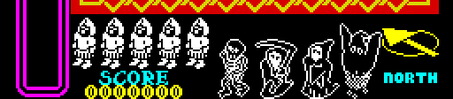
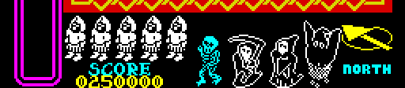
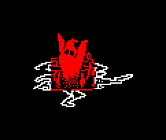

| The quest: objects, villains, score and percentage |
Nightshade's quest: four villains haunt the town, and each can be destroyed only by one of four objects that lie somewhere in its streets. The knight has to find each object, carry it, and throw it at the right villain. When all four are gone the game ends with the villains sinking into a pit. This page is how the game keeps track of all that, and what it counts: the score, the percentage and the lives.
At every new game PLACE_OBJECTS and PLACE_VILLAINS put the four objects and the four villains each in a cell of its own choosing: a random address in the ROM is read in pairs of bytes as a column and a row, until one is a cell a knight can stand in. Nothing stops two sharing a cell, or a villain standing where the knight starts. In the game this page started, the objects were in cells (11,14), (11,6), (13,13), (13,29) and the villains in (13,5), (11,17), (18,17), (28,9).
Which object kills which villain is decided by nothing but the order of the records. A thrown object (OBJECT_FLIGHT) tests only the villain four records -- 64 bytes -- on from its own (OBJECT_STRIKE), so object record n and villain record n are a pair:
| Record | Object | Carried as thing | Its villain | Colour on the panel |
|---|---|---|---|---|
| 0 | 7 lying, 11 thrown | 4 | cyan | |
| 1 | 6 lying, 10 thrown | 3 | green | |
| 2 | 5 lying, 9 thrown | 2 | magenta | |
| 3 | 4 lying, 8 thrown | 1 | red |
Run in the simulator with each object and each villain on the same spot, the other villain records empty:
| Villain record 0 | 1 | 2 | 3 | |
|---|---|---|---|---|
| object record 0 | struck | passes through | passes through | passes through |
| object record 1 | passes through | struck | passes through | passes through |
| object record 2 | passes through | passes through | struck | passes through |
| object record 3 | passes through | passes through | passes through | struck |
A thrown object passes through the other three villains as if they were not there, and flies on until it meets a wall, where it falls and lies as an object again, to be picked up once more.
The knight carries up to eleven things, objects and antibodies alike, in the order he took them up (CARRIED), each shown on the panel down the left of the screen, the first at the bottom (PICK_UP_THING). The fire key throws the last one taken up, so the order he gathers things in is the order he can use them. With all eleven places full an object stays where it lies, but a find is taken up and lost. An object he carries flashes on the panel when its villain is less than five cells away in both directions (COLOUR_CARRIED): the game's hint that the villain it kills is near.
Struck by its object, a villain becomes graphic 132, dying (VILLAIN_DYING): for eight turns it bursts and the whole play area's paper flashes through the colours, one a turn; 250,000 goes on the score; four sparkles fly out from where it stood (VILLAIN_SPARKLES), taking over the four find records, whatever was in them; and the villains on the panel are drawn again, the dead one now in its colour (DRAW_VILLAINS). Run in the simulator with the build's own quest steps, the first villain struck and watched from the next turn on: the paper went white, black, blue, red, magenta, green, cyan, a colour a turn until the record emptied, and the score was 0250000.

The panel at the start of the game: the four villains in outline.

After the first villain has died: its picture in its colour, and the score.
When all four villain records are empty and no sparkle is still on the screen (CHECK_QUEST_DONE), the game is over, with the quest done (GAME_OVER): the percentage and the score are shown, and then ten records are filled from ENDING_RECORDS and the main loop runs on with nothing but them -- the back and front of a pit, and the four villains, carried across one at a time and sunk into it. In the run above it lasted 178 turns before the game went back to its menu.

The ending, thirty turns in: the first villain, in red, over the pit and sinking into it.
ADD_SCORE adds in BCD, and the score shows seven digits, the last two always 00: they are printed from a byte nothing ever writes. So what is shown is a hundred times what the code adds. Every call that scores, found by searching the code for a load of BC followed by a call or jump to ADD_SCORE:
| Points | For | In | At |
|---|---|---|---|
| 1,000 | the creature struck by an antibody, or run into a wall | CREATURE_UPDATE | $C026 |
| 2,500 | a walker (112-127) touching the knight | MONSTER112_UPDATE | $C0B0 |
| 2,500 | a walker destroyed by an antibody | HIT_DESTROYS | $C0E2 |
| 2,000 | a walker changed into the next kind | HIT_CHANGES | $C0F9 |
| 1,500 | a walker split, with no record to split into | HIT_SPLITS | $C123 |
| 1,500 | a walker split in two | HIT_SPLITS | $C14C |
| 1,000 | a walker turned into a wanderer | HIT_DEMOTES | $C15C |
| 500 | a wanderer (64-79) struck, or touching the knight | WANDERING_MONSTER | $CEED |
| 250,000 | a villain destroyed by its object | OBJECT_FLIGHT | $D83B |
A monster that touches the knight scores as it takes his hit, the same as destroying it would.
After every game PERCENTAGE works out how much of it was done: a unit for every cell the knight has been in (a bit each in VISITED, set by VISIT_CELL as he walks) and three for every villain destroyed. Each unit adds 10288 to a 16-bit sum of which 65536 is one per cent, counting the carries in BCD, and 144 more at the end: exactly what makes 637 units a hundred. The town has 625 cells a knight can stand in, and 625 + 3 x 4 is 637. Run with VISITED and the villain records staged:
| Cells visited | Villains destroyed | Units | Percentage |
|---|---|---|---|
| 1 | 0 | 1 | 0% |
| 64 | 0 | 64 | 10% |
| 100 | 0 | 100 | 15% |
| 312 | 0 | 312 | 48% |
| 625 | 0 | 625 | 98% |
| 625 | 3 | 634 | 99% |
| 625 | 4 | 637 | 100% |
| 0 | 4 | 12 | 1% |
| 1024 | 0 | 1024 | 60% |
Every cell alone is 98%; the villains make the rest. The count wraps past 99 without carrying, which only matters for more cells than a knight can visit (every bit set, 1024 units, comes out as 60%: the hundred is lost). And the hundred, when it comes, is printed wrongly (PRINT_PERCENTAGE): it is printed by jumping into the digit printer past the point where it chooses its font, so the three characters come out of whatever font was used last.
A game starts with 6 lives -- from the opcode at LIVES_BYTE, see how the game is put together -- and the first life takes one, so the panel shows 5. When a life ends the knight vanishes where he stood, and the next starts in that same cell (NEW_LIFE, from the cell KNIGHT_KILLED writes into the start records): he appears from the ground up over eighteen turns, untouchable meanwhile, and the monsters round him are cleared away. A villain standing in the cell kills him again the moment he has appeared, as often as he comes back. With no life left to take the game is over.
Pentagram, a year later, has a quest of its own (the well, the bucket and the pentagram) and monsters of its own (bolts, things from the sky and the monsters), in rooms. Nightshade's quest is thrown rather than carried to a place, and its pairs are fixed by nothing but where the records lie.